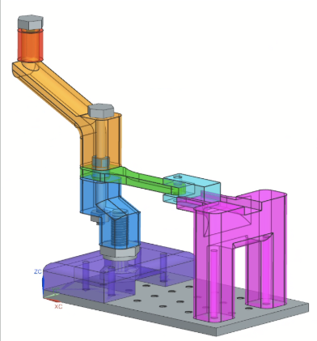
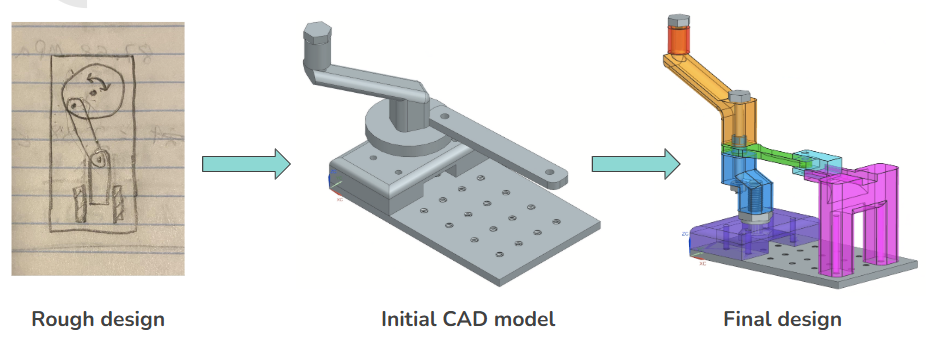
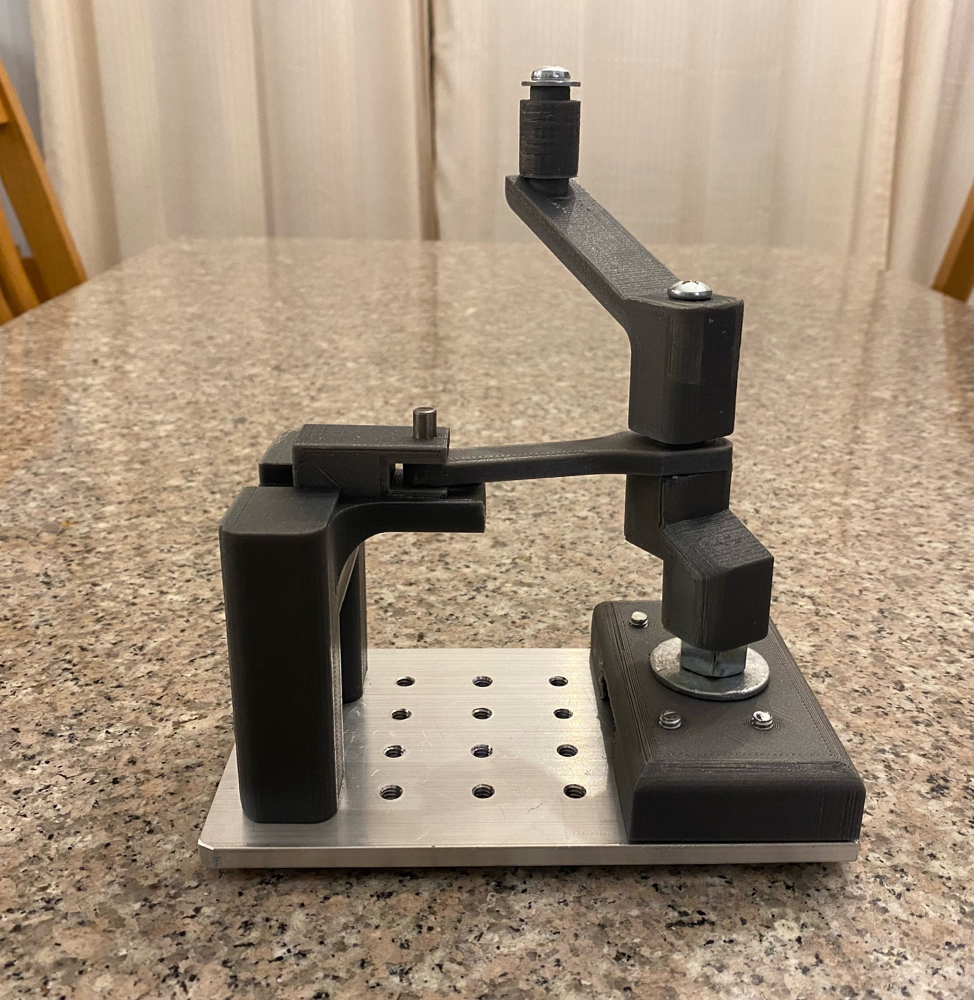

The Brief
Project A asked each team to design and build a slider-crank mechanism that works as a desk paperweight. Our goal statement was simple: how might we design and manufacture an easy-to-use, 3D-printed slider crank?
The brief set three requirements. It had to turn smoothly, run quietly, and keep working upside down. We added our own priorities: good mechanical advantage and ease of use.
My Role
- One of five engineers in ME 470 Group 2, sharing concept generation, linkage analysis, CAD and the build.
- Co-authored the Project A report, including the lessons we carried into the can crusher.
To fill in: Name the parts you owned, for example the kinematic analysis, a specific printed part, or the assembly and threading fix.
Concepts
We started with five ideas:
- A large disc with the crank turning parallel to the baseplate
- A large disc with the crank turning perpendicular to the baseplate
- A long, formal track for the slider
- No formal track at all
- A large handle driving a large crank
We chose the large handle. It is the easiest to use, it looks distinctive (which is the point of a desk ornament), and its transmission angle never drops below 40°. To save material and print time, we also removed the wheel the crank would normally mount to, so the crank drives the slider directly. Keeping the rod short and the offset at zero kept the parts small and light.
How It Works

You turn the handle by its red collar, which spins freely on the grip. The upper crank, which is the handle, locks into the lower crank through a cylinder with two flats cut on it, so the two turn together. They turn around a ½ in bolt held in the bracket with a nut and two washers to cut friction.
The connecting rod rides on the lower crank with enough clearance to turn freely, and a pin joins it to the piston, which slides in the piston support. That gives 4 links and 4 joints, so the mechanism has one degree of freedom. It is also Grashof: b − a (2.25 in) is greater than the offset c (0 in), so the crank can turn all the way round.
Explore the Mechanism
This is our Project A spreadsheet model running live. It uses the link lengths from Figure 1 and the 3.5 in handle. Press play, drag the orange crank pin, or click and drag across any chart. Jump to 100° sets the angle from the worked example in our report.
At 100°, the model reproduces our Table 1 to within rounding: d = 2.78 in, θ3 = 165.7°, μ = 75.7°, and the slider moves at about 3.5 in/s toward the crank. Table 1 gave a mechanical advantage of 1.98 because it used a 1.4 in input radius. With the 3.5 in handle we built, the advantage at that angle is 5.0, and it never drops below 4.5 across the whole turn.
Results
On paper, the linkage met its goals: a full-rotation crank with a transmission angle far above the 40° guideline. The miss was the upside-down requirement. Nothing locked the piston into its support, so the paperweight couldn’t run upside down. Our fix was a revised piston support that encloses the slider.


What I Learned
- Read the requirements twice. We designed for smooth, quiet running and missed that the paperweight also had to work upside down.
- Design around the hardware you can get. Our main crank needed a ½ in threaded hole, but the largest tap in the lab was ⅜ in. We found larger fasteners in the basement shop and borrowed a drill to thread the hole, and we had to swap fasteners and washers that didn’t fit.
- Collaborate earlier. We agreed to run a more collaborative design process and spend more time on the requirements for the next project.
The report ended with two ideas for doing better: add an offset (link c) to improve mechanical advantage, and look at four-bar linkages. We did both on the can crusher.
Gallery


